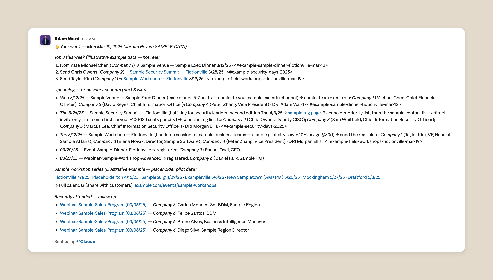

Full text of the post
One of the biggest challenges I’ve faced as a marketer is keeping the sales team up to date with everything that’s going on in the field. Most marketers know the hallway conversation where a sales rep says, “Oh, I never heard about that event” (or that new whitepaper, that webinar) and you realize you’ve missed a chance to share the latest work with sales reps, and in turn, your customers.
My initial solution was one many marketers will recognize: the 15-minute Monday morning stand-up with the sales team. I spent Sunday evenings collating updates from across the business and turning them into presentable slides, and then delivered the info live in the meeting and shared the deck in Slack. Job done, right? Not quite: with access to Claude, this all felt overly manual and as our team grew and I started supporting multiple sales teams, my slide routine couldn’t keep up. The updates were also becoming less useful, because I no longer had time to pick out the opportunities that were right for each team.
I wanted Claude to do the work and create a better “product” for each sales rep: a weekly digest tailored to their accounts and matched to everything we had going on in marketing.
Thankfully, we had organized a marketing hackathon: dedicated time to rebuild repeatable processes and workflows with Claude Code. I huddled with my team and we dedicated an hour to this problem, which made all the difference. Casual, often peer-led learning opportunities like hackathons allow for experimentation and exploration you wouldn’t otherwise carve out time for in your day to day, and our team was no exception.
You don't need to code, you need to explain
One of the biggest questions I get from fellow marketers is, “How do I get started with AI?” My approach, especially with Claude Code, is to open with a prompt explaining to Claude that although I’m not technical, I have this specific challenge, and Claude should treat me as a product manager who deeply understands the business problem, and work with me step by step. I think out loud, so I'll often record myself explaining the problem and give Claude the transcript; that way, Claude has all the business context.
In the case of our team’s weekly AE digest, I started by outlining the goal to Claude: a weekly Slack message to each rep on what’s happening in marketing and how it would help their customers. I then wrote a fake weekly update to give Claude a template to work towards. I know sales reps are action-oriented, so I started with a “top three things for the week” list, featuring three action items, such as upcoming events or recent content, they can share with their customers. I also wrote a separate template for manager roll-ups, since managers typically want a holistic view of their team rather than just individual accounts.
Next, I connected Claude to BigQuery via MCP; BigQuery is our marketing team’s source of truth, offering granular insights into data from HubSpot, Clay, and Salesforce. I wanted to start simple, so I began with our single source of truth for events and webinars. To personalize each update, I had Claude pull the rep’s territory from our CRM and any relevant account updates communicated in Slack.That way, Claude can parse the two together to create a personalized weekly update.
Over time, I’ve worked with other teams across marketing to enrich the data, so the briefing now includes new content like blog articles, and ebooks, customer stories, webinars, and even events from our partner ecosystem.
User feedback is the real prompt engineering
To roll this out to the field, I started with one sales team that agreed to be the test group. Sending to a group of 10 people felt less daunting in case errors came up, and the group was committed to providing feedback. After the initial send, I made a few tweaks.
Some issues were just errors. For example, where an event had no URL in the source sheet, Claude composed a plausible-looking one that led nowhere. We immediately wrote it into the prompt as a hard rule: never invent a URL. A link now renders only if the address comes character for character from the source sheet. A later version dropped linkless events from the briefing entirely, because we realized that events for which our sellers can't register anyone are just noise.
By the end of the first week, the prompt held nine content rules, each traced to a piece of feedback from a seller or a manager. A seller flagged an engineering VP recommended for a workshop aimed at knowledge workers, so contact titles are now checked against an event's intended audience, and mismatches are dropped without comment. An industry gate keeps retail accounts off finance dinner invitations, and brand-new sellers who don’t have accounts yet get a short welcome note instead of a blank message.
Other issues were data problems. Anyone in marketing knows how hard it is to maintain a single source of truth. The field events sheet, for example, has had its columns rearranged three times in six weeks. To plan for that, we changed the prompt to open every run by reading the sheet's header row and verifying the column map before composing anything. Instead of hard-coding “look at Column C,” the instruction is now something like, “Look at the column with the event URL.”
Rolling the digest out across the business
After these initial runs, I expanded the digest to every team I support, and field marketing now runs it for all of sales. Every Monday morning, account executives across several Anthropic sales segments open Slack to a direct message that lists three priority actions for the week, field events for their accounts, contacts who have already registered for upcoming webinars, relevant marketing content to share, and other follow-up suggestions.
Each message is composed from the recipient's own account list, so no two messages are alike. The digest is working; we recently doubled registrations for an executive dinner in a week, purely because the right reps had the right event in front of them on Monday morning.
When Anthropic's business development representatives (BDRs) wanted their own version of the digest, we duplicated the prompt for them with a change in one field, since BDRs map to accounts through a different relationship in our CRM than account reps do. The prompt structure and content rules carried over unchanged, and the BDRs were live within two days. I’ve since done this for the customer success and alliance teams too, and I also provide an overview of all marketing activities for other cross-functional partners outside sales.
No matter how fast the business moves, my team and I, with Claude’s help, make sure that sales reps start their Monday knowing exactly what’s happening that week and what accounts and events to prioritize. Each Monday's send is archived in full, so I can pull up exactly what any seller received on any date, and managers see their whole team's recommendations in a single roll-up. I still read what goes out, though the system no longer waits for my approval. When I went on holiday a few weeks ago, the Monday send went off on its own, without a hitch.

Best practices for getting started with Claude
Below, I share tips and tricks inspired by my own experience working with Claude Code:
- Start small, with something you already do manually. It can be hard to get started when there’s so much noise about what people are doing with AI. My advice: pick the repetitive task you spend the most hands-on time on and ask Claude to rebuild it. That way, you’ll be able to judge the output because you already know what good looks like. If the problem still feels too big, use Claude as a thought partner to break it into steps. And if it’s something you share with other people, route the early runs to yourself first so you catch the errors before anyone else does.
- Write instructions in plain language and version each document. Brief Claude the way you’d brief a new colleague and Claude will do the rest. Instruct Claude to save each update as a numbered version with a one-line note of what’s changed, so you have a record of the prompts that produced each past run. Ours is a markdown file my colleagues run for their own segments; we started from a shared Google Doc and moved to GitHub once more people needed to edit it.
- Pilot with a small, committed group. We ran our first tests with a handful of account executives who we knew would be willing to spend the time on providing us feedback and improving the report over time, helping us detect errors or offer suggestions on how to expand or personalize coverage.
- Use feedback to improve your prompt, fold in each correction as an explicit rule. The marketing briefing became useful when the recipients started sharing feedback with us and each correction became an explicit rule for Claude.
Claude automated a manual process that used to take me hours each Sunday, but with this project, my team and I have gained something much better than time: our output is now more personal, more useful, and more measurable. What marketing process can you improve with Claude?
Get started with Claude Code today.